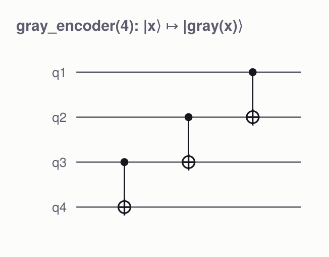
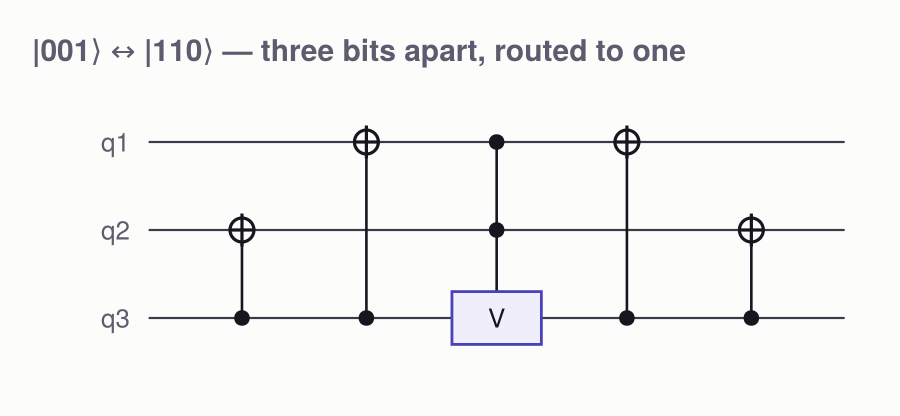
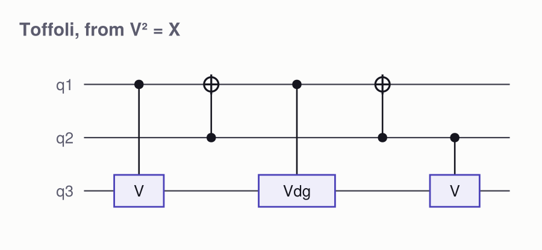
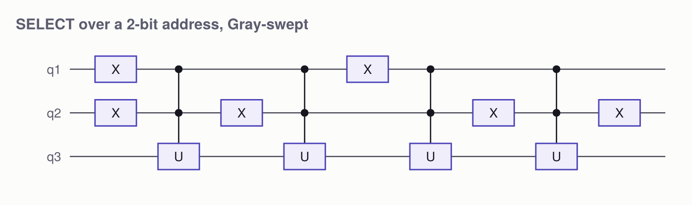

Applications of Gray coding
Fifteen places the one-bit-at-a-time property pays, from the code itself as a circuit up to Hamiltonian simulation. Every number on this page is measured from a circuit that is checked against its own definition in the same block — nothing is quoted.
examples/gray_applications.jl in the repository runs all of it in one go.
1. The code itself
using QuantumCircuits
[(i, bits(i, 3), bits(gray(i), 3), i == 0 ? -1 : gray_flip_position(i, 3)) for i in 0:7]8-element Vector{Tuple{Int64, String, String, Int64}}:
(0, "000", "000", -1)
(1, "001", "001", 0)
(2, "010", "011", 1)
(3, "011", "010", 0)
(4, "100", "110", 2)
(5, "101", "111", 0)
(6, "110", "101", 1)
(7, "111", "100", 0)Two properties carry everything downstream: which bit flips is trailing_zeros(i) — free to compute — and the walk closes into a cycle, so every bit flips an even number of times.
foldl(⊻, 1 << p for p in gray_flip_positions(3)) == 0 # the cycle closestruegraycodefigure(4)
2. The code is a circuit
gray(x) = x ⊻ (x >> 1) is linear over GF(2), so the map |x⟩ ↦ |gray(x)⟩ is pure CNOT — n-1 of them, no ancillas, no multi-qubit controls. Bit b of the output is x_b ⊻ x_{b+1}, one CNOT each, swept upwards so every source bit is still untouched when it is read.
circuitfigure(gray_encoder(4); title = "gray_encoder(4): |x⟩ ↦ |gray(x)⟩")
M = matrix(gray_encoder(4))
all(M[gray(x)+1, x+1] ≈ 1 for x in 0:15), matrix(gray_decoder(4)) * M ≈ I(16)(true, true)3. A Gray counter
gray_increment is decode → increment → encode, and maps |gray(i)⟩ ↦ |gray(i+1)⟩. A binary counter can change every bit at once (0111 → 1000); a Gray counter never changes more than one, which is why hardware sampling it mid-update still reads a valid code word.
M = matrix(gray_increment(3))
all(hamming(x, argmax(abs.(M[:, x+1])) - 1) == 1 for x in 0:7)true4. Uniformly controlled rotations
The central primitive: 2ᵏ CNOTs regardless of how the branches are spread — see Gray coding for the derivation.
[(k, count_cnots(multiplexed_rz(randn(1 << k), 1:k, k+1)), 2k * (1 << k)) for k in 1:6]6-element Vector{Tuple{Int64, Int64, Int64}}:
(1, 2, 4)
(2, 4, 16)
(3, 8, 48)
(4, 16, 128)
(5, 32, 320)
(6, 64, 768)The three columns are k, the Gray-code CNOT count, and what one multi-controlled rotation per branch would cost.
5. Uniformly controlled arbitrary one-qubit gates
Euler-decompose each branch and run the three angle families through three multiplexors; the leftover per-branch phases are a diagonal on the controls.
Us = [randu(2) for _ in 1:4]
c = multiplexed_1q(Us, [1, 2], 3)
matrix(c) ≈ cat(Us...; dims = (1, 2)), count_cnots(c)(true, 14)6, 7. Diagonal unitaries and state preparation
[(n, count_cnots(diagonal(randn(1 << n))), (1 << n) - 2) for n in 2:7]6-element Vector{Tuple{Int64, Int64, Int64}}:
(2, 2, 2)
(3, 6, 6)
(4, 14, 14)
(5, 30, 30)
(6, 62, 62)
(7, 126, 126)[(n, count_cnots(prepare_state(randn(ComplexF64, 1 << n))), 2 * (1 << n) - 4) for n in 2:7]6-element Vector{Tuple{Int64, Int64, Int64}}:
(2, 4, 4)
(3, 12, 12)
(4, 28, 28)
(5, 60, 60)
(6, 124, 124)
(7, 252, 252)8. Two-level unitaries: routing to Gray adjacency
A Givens factor acts on |a⟩ and |b⟩, which generally differ in several bits. CNOTs fanning out from the lowest differing bit bring them one bit apart, at which point a single multi-controlled gate does the work; the routing is then undone.
V = randu(2)
c = Circuit(3); two_level!(c, TwoLevel(1, 6, V), 3)
circuitfigure(c; title = "|001⟩ ↔ |110⟩ — three bits apart, routed to one")
[(bits(a, 3), bits(b, 3), hamming(a, b), count_cnots((c = Circuit(3);
two_level!(c, TwoLevel(a, b, V), 3); c))) for (a, b) in ((0, 7), (2, 3), (0, 4))]3-element Vector{Tuple{String, String, Int64, Int64}}:
("000", "111", 3, 4)
("010", "011", 1, 0)
("000", "100", 1, 0)9. Arbitrary unitary synthesis
two_level_decompose gives the factors, two_level! routes each one, and lower = true expands the multi-controlled gates so nothing bigger than a CNOT survives.
U = randu(8)
lo = synthesize_unitary(U; lower = true)
matrix(lo) ≈ U, length(lo), count_cnots(lo), all(length(op.qubits) <= 2 for op in lo.ops)(true, 241, 98, true)10. Multi-controlled gates, ancilla-free
Write the AND of the control bits in the parity basis:
x₁ x₂ ⋯ xₙ = 2^{-(n-1)} · Σ_{S ≠ ∅} (-1)^{|S|+1} · (⊕_{i ∈ S} xᵢ)so C^n(U) factors into one controlled-V^{±1} per non-empty subset, each controlled on the parity of that subset rather than on individual wires. Those 2ⁿ-1 parities are then walked in Gray order — one CNOT per step.
circuitfigure(multicontrolled(matrix(X()), [1, 2], 3); title = "Toffoli, from V² = X")
[(k, length(c) - count_cnots(c), count_cnots(c)) for k in 2:5
for c in (multicontrolled(randu(2), 1:k, k+1),)]4-element Vector{Tuple{Int64, Int64, Int64}}:
(2, 3, 2)
(3, 7, 6)
(4, 15, 14)
(5, 31, 30)Controlled-V gates and CNOTs, against 2ᵏ-1 and 2ᵏ-2. Exponential in the number of controls — that is the price of using no ancillas.
11, 12. Phase polynomials and parity networks
A diagonal unitary is exp(i φ(x)), and φ expands uniquely over parity functions. Emitting one CNOT-ladder gadget per term rebuilds most of the same parity each time; a parity network carries a running parity on an anchor wire so each Gray-order step costs one CNOT.
[(n, count_cnots(synthesize(pp; order = :gadgets)),
count_cnots(synthesize(pp; order = :gray)), (1 << n) - 2)
for n in 2:7 for pp in (phase_polynomial(randn(1 << n)),)]6-element Vector{NTuple{4, Int64}}:
(2, 2, 2, 2)
(3, 8, 6, 6)
(4, 22, 14, 14)
(5, 52, 30, 30)
(6, 114, 62, 62)
(7, 240, 126, 126)On dense polynomials the network lands exactly on the optimal 2ⁿ-2. It is not magic, though — a chain of weight-2 terms already costs two CNOTs apiece and there is nothing to save:
n = 6
co = zeros(1 << n)
for S in (0b000011, 0b000110, 0b001100, 0b011000, 0b110000); co[S+1] = randn(); end
pp = PhasePolynomial(n, co)
count_cnots(synthesize(pp; order = :gadgets)), count_cnots(synthesize(pp; order = :gray))(10, 10)13. Walsh-series truncation
Keeping only the largest coefficients of a smooth phase trades accuracy for gates (truncate_terms).
N = 64
φ = [2.0 * sin(2π * x / N) + 0.4 * (x / N)^2 for x in 0:N-1]
pp = phase_polynomial(φ)
[(nterms(tp), count_cnots(c), round(maximum(abs, phases(tp) .- φ), sigdigits = 3),
round(gate_fidelity(matrix(c), Diagonal(cis.(φ))), digits = 6))
for k in (2, 4, 8, 16, 32, N) for tp in (truncate_terms(pp, k),) for c in (synthesize(tp),)]6-element Vector{Tuple{Int64, Int64, Float64, Float64}}:
(2, 4, 0.777, 0.949279)
(4, 8, 0.399, 0.987977)
(8, 14, 0.139, 0.997923)
(16, 22, 0.053, 0.999869)
(32, 38, 0.0062, 0.999998)
(47, 52, 4.44e-16, 1.0)Eight of 47 terms — 14 CNOTs instead of 52 — already reaches fidelity 0.998.
14. LCU and QROM: sweeping an address register
A branch of a SELECT fires on |1⟩, so address j must be reached by X-ing every control where j has a zero. Consecutive Gray addresses differ in one bit, so each step costs a single X instead of the Hamming distance between neighbouring integers.
[(k, count_gates(select(Us, 1:k, [k+1]; order = :gray), :X),
count_gates(select(Us, 1:k, [k+1]; order = :natural), :X))
for k in 2:7 for Us in ([randu(2) for _ in 1:(1 << k)],)]6-element Vector{Tuple{Int64, Int64, Int64}}:
(2, 6, 6)
(3, 12, 14)
(4, 22, 30)
(5, 40, 62)
(6, 74, 126)
(7, 140, 254)2ᵏ versus 2ᵏ⁺¹ — the saving approaches half as the address widens.
circuitfigure(select([matrix(X()), matrix(H()), matrix(Z()), matrix(T())], [1, 2], [3]);
title = "SELECT over a 2-bit address, Gray-swept")
15. Hamiltonian simulation
Diagonal (I/Z-only) terms all commute, so they can be pooled and synthesised together through the parity network. How much that buys depends entirely on how dense the diagonal part is.
A transverse-field Ising Hamiltonian is all weight-2 couplings — nothing to pool:
function tfim(n; J = 1.0, h = 0.6)
t = Pair{String,Float64}[]
for i in 1:n-1
s = collect("I"^n); s[i] = 'Z'; s[i+1] = 'Z'; push!(t, String(s) => J)
end
for i in 1:n
s = collect("I"^n); s[i] = 'X'; push!(t, String(s) => h)
end
t
end
[(n, count_cnots((c = Circuit(n); trotter_step!(c, tfim(n), 0.05; parity_network = false); c)),
count_cnots((c = Circuit(n); trotter_step!(c, tfim(n), 0.05; parity_network = true); c)))
for n in 4:7]4-element Vector{Tuple{Int64, Int64, Int64}}:
(4, 6, 6)
(5, 8, 8)
(6, 10, 10)
(7, 12, 12)A dense diagonal cost operator — a QAOA phase separator — pools completely:
function qaoa_cost(n)
t = Pair{String,Float64}[]
for S in 1:(1 << n)-1
s = collect("I"^n)
for b in 0:n-1
((S >> b) & 1) == 1 && (s[n-b] = 'Z')
end
push!(t, String(s) => randn())
end
t
end
[(n, count_cnots((c = Circuit(n); trotter_step!(c, qaoa_cost(n), 0.05; parity_network = false); c)),
count_cnots((c = Circuit(n); trotter_step!(c, qaoa_cost(n), 0.05; parity_network = true); c)))
for n in 3:6]4-element Vector{Tuple{Int64, Int64, Int64}}:
(3, 10, 6)
(4, 34, 14)
(5, 98, 30)
(6, 258, 62)258 CNOTs down to 62 at n = 6, for exactly the same operator — the terms commute, so pooling them changes nothing but the gate count.
What Gray coding does not buy
Reordering Trotter terms so consecutive supports are Gray-adjacent (gray_order) sounds like it should let neighbouring CNOT ladders cancel. It does not: each term's gadget is bracketed by its own basis-change gates, which sit on the same wires as the ladder ends, so cancel_adjacent_cnots! never sees two CNOTs meet. Measured on dense random Hamiltonians the reordering is neutral to slightly worse. The win comes from pooling commuting terms, not from reordering non-commuting ones.
Reference
QuantumCircuits.multicontrolled — Function
multicontrolled(U, controls, target; n) -> CircuitStandalone circuit for multicontrolled!.
QuantumCircuits.multicontrolled! — Function
multicontrolled!(c, U, controls, target) -> cAppend C^n(U): apply the one-qubit unitary U to target only when every control is |1⟩. No ancillas.
The construction is inclusion–exclusion over parities. Writing the AND of the control bits in the parity basis,
x₁ x₂ ⋯ xₙ = 2^{-(n-1)} · Σ_{S ≠ ∅} (-1)^{|S|+1} · (⊕_{i ∈ S} xᵢ)so U^{AND(x)} factors into one controlled-V^{±1} per non-empty subset S, with V = U^{1/2^{n-1}} and the sign set by the parity of |S|, each controlled on the parity of S rather than on individual wires. Those 2ⁿ-1 parities are then walked in Gray order by the same parity network that drives synthesize — one CNOT per step.
Costs 2ⁿ-1 controlled-V gates and about 2ⁿ CNOTs: exponential in the number of controls, which is the price of using no ancillas. Fine for the handful of controls that show up inside two_level!.
QuantumCircuits.matrix_root — Function
matrix_root(U, m) -> Matrix{ComplexF64}Principal 2^m-th root of a unitary: the V with V^(2^m) = U whose eigenvalue phases are each divided by 2^m. Computed from a Schur factorisation, which stays unitary even when the spectrum is degenerate.
QuantumCircuits.gray_encoder — Function
gray_encoder(n) -> CircuitThe map |x⟩ ↦ |gray(x)⟩, in n-1 CNOTs.
gray(x) = x ⊻ (x >> 1) is linear over GF(2), so the Gray code is a CNOT circuit: bit b of the output is x_b ⊻ x_{b+1}, one CNOT each. Sweeping from the least significant bit upwards means every source bit is still untouched when it is read.
See gray_decoder for the inverse and gray_increment for what they are good for.
QuantumCircuits.gray_decoder — Function
gray_decoder(n) -> CircuitInverse of gray_encoder: |gray(x)⟩ ↦ |x⟩, also n-1 CNOTs. Recovers x_b = ⊕_{j ≥ b} g_j by running the same ladder in reverse.
QuantumCircuits.increment — Function
increment(k) -> CircuitStandalone k-qubit incrementer, |x⟩ ↦ |x+1 mod 2ᵏ⟩.
QuantumCircuits.increment! — Function
increment!(c, wires) -> cAppend |x⟩ ↦ |x+1 mod 2ᵏ⟩ on wires (wires[1] most significant).
A carry chain: flip bit b when every lower bit is 1. Sweeping from the top bit down means each multi-controlled X reads bits that have not been touched yet. Uses multicontrolled! for the controls.
QuantumCircuits.gray_increment — Function
gray_increment(n) -> CircuitA Gray-code counter: |gray(i)⟩ ↦ |gray(i+1)⟩.
Decode to binary, add one, re-encode — n-1 CNOTs each side around an ordinary increment. Successive states of the register differ in exactly one bit, which is why Gray counters are used where a partly-updated readout must still be a valid code word.
QuantumCircuits.select — Function
select(Us, controls, targets; n, order=:gray) -> CircuitStandalone circuit for select!.
QuantumCircuits.select! — Function
select!(c, Us, controls, targets; order=:gray) -> cAppend a SELECT operation: apply Us[j+1] to targets when the address register controls reads |j⟩. The building block of linear-combination-of- unitaries and of QROM table lookup.
Each branch is a multi-controlled gate, and controls fire on |1⟩, so an address pattern j has to be reached by X-ing every control where j has a zero. Sweeping the addresses in Gray order means consecutive patterns differ in one bit, so each step costs a single X instead of the Hamming distance between neighbouring addresses:
order = :gray—2ᵏ + O(1)X gates;order = :natural—Σᵢ hamming(i, i+1)of them, about2ᵏ⁺¹.
The multi-controlled gates themselves are emitted as single instructions; run them through multicontrolled! to lower one-qubit targets to CNOTs.
QuantumCircuits.support_mask — Function
support_mask(s) -> IntBit mask of the non-identity positions of a Pauli string, with the leftmost character as the most significant bit.
QuantumCircuits.gray_order — Function
gray_order(terms) -> VectorReorder Pauli terms (as returned by pauli_decompose) by the Gray position of their support, so that consecutive terms overlap as much as possible.
This does not by itself reduce the CNOT count, and it is worth being clear about why, because the intuition that it should is a natural one. Each term's gadget is bracketed by its own basis-change gates, and those sit on the same wires as the ladder ends, so cancel_adjacent_cnots! can never see two CNOTs meet. Measured on dense random Hamiltonians the reordering is neutral to slightly worse (3 qubits: 162 CNOTs as given, 158 reordered; the difference is noise, not a trend).
What does pay is pooling terms that commute and synthesising them together — trotter_step!(c, terms, dt; parity_network = true), which carries one running parity instead of rebuilding a ladder per term. This function is kept as an ordering utility, and for inspecting how a Hamiltonian's supports are distributed.
QuantumCircuits.truncate_terms — Function
truncate_terms(pp, k) -> PhasePolynomialKeep only the k largest non-constant coefficients of a phase polynomial.
Truncating the Walsh series of a smooth phase function is the standard way to trade accuracy for gates: a diagonal exp(i f(x)) that would cost 2ⁿ-2 CNOTs exactly is often good to several digits with a few dozen terms.